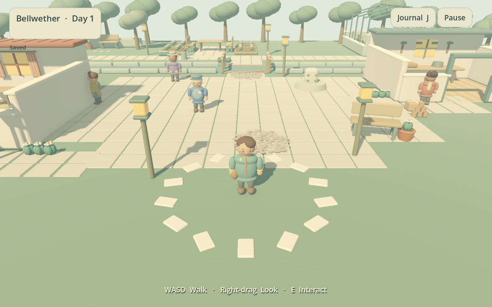
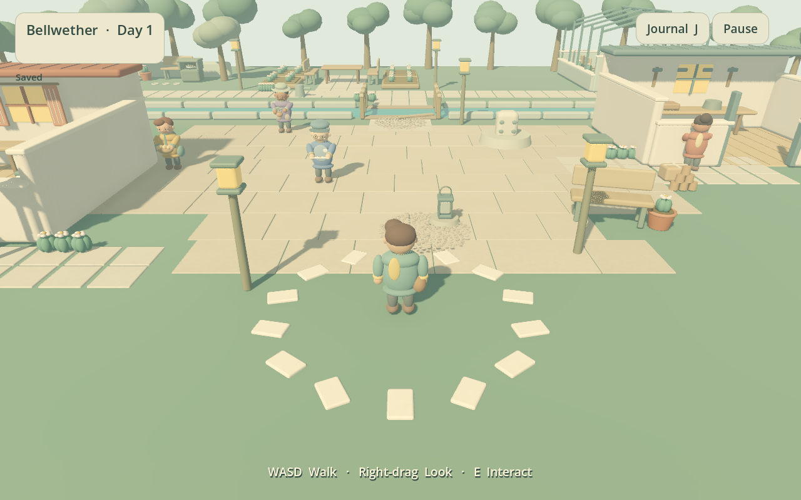
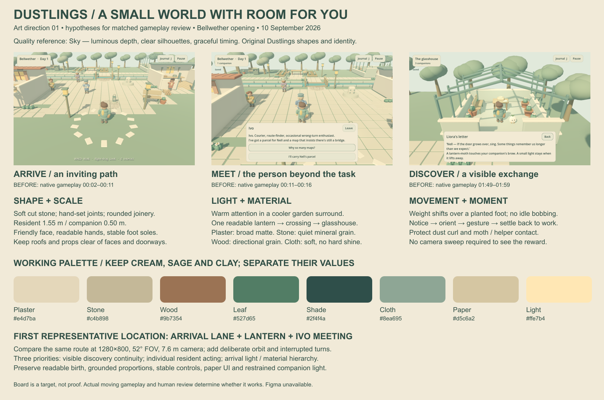

Awaiting players
Experience
0 RPG participants. Unfamiliar players still need to assess controls, residents, agency, meaningful change, discovery and desire to return.
One small neighborhood to explore, four residents to meet, and companions who help bring its places back to life.
Generated inputs; no human playtest. MovieMaker uses fixed engine time and preserves normal playback speed. Recordings are not performance measurements.
These are different source snapshots. Open either image to inspect its original size; no concept render stands in for gameplay.


Original: 91764c3e8514abc4a3f024613662cc72cf2ad8cfd285f1f85e5d18991410b40b
Later: e505ffbc13b70540b8f4353cd5dc26216058d5737c23fce4e2e1909cc83fa8dc
No claim of parity with the changing working source or a new packaged build is made.
Four residents, home color, bridge, garden, greenhouse, companion light and shared table. The script knows the route and choices.
124 steps completed · 159.158 engine seconds · older art and behavior.
The scripted return stalled beside Ivo at 152.858 engine seconds. It reached the greenhouse but did not finish the opening.
A stalled straight-line script does not prove that a person has no route around a resident.
A complete current route, art orbit, discovery exchange and saved return are still being verified. The earlier completed recording is not evidence that newer changes pass.
The discoveries attempt also failed during its authored route. A separate arrival attempt froze a QA script mid-edit and was terminated after a parse error; its log is preserved. Frozen-driver parsing now precedes native capture.
Later minimum-window UI, on a separate source: Settings, Journal and capture record. These do not establish physical picker behavior or input comfort.
Warm crafted objects in a cooler green surround; readable expressions, planted movement and discoveries that visibly happen. The board is a proposal for comparison, not proof of quality.

Art direction and timestamped priorities · Independent critic's own findings. Figma is unavailable; this board and native game UI are the inspectable fallback.
0 RPG participants. Unfamiliar players still need to assess controls, residents, agency, meaningful change, discovery and desire to return.
Current movement and discovery reviews are pending. Sound has not been auditioned. Automated checks do not establish beauty or delight.
The owner has not accepted the current RPG experience, its completeness or its readiness to sell.
Prepared private observation protocol: 12–20 unfamiliar target players, separate audience histories, neutral continuation and actual counts with reasons. No invitations or feedback are invented.
| Item | Current evidence |
|---|---|
| Standalone RPG packages | Fresh Mac/Windows manifest pending. No old courtyard download is presented as the RPG. |
| Packaged Mac recovery | Runner prepared; exact exported launch, resume and corrupt-primary recovery pending. |
| RPG performance | Quiet current native measurement pending. Old courtyard results do not validate this neighborhood. |
| Physical devices and sound | Windows unrun; physical controls, OS picker and listening review pending. Mac generated-input captures are not human play. |
Exact identities, unresolved gaps and next actions. No score or completed checklist replaces human judgment.